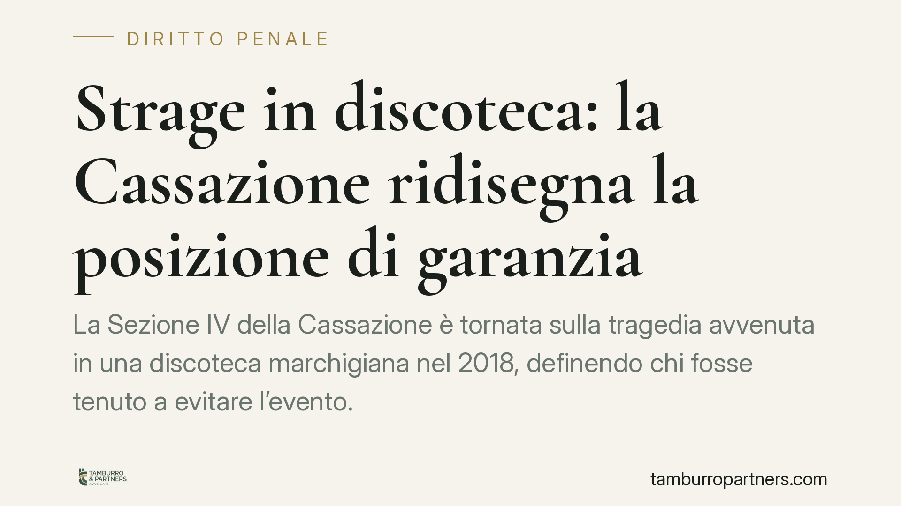

Strage in discoteca: la Cassazione ridisegna la posizione di garanzia
La Sezione IV della Cassazione è tornata sulla tragedia avvenuta in una discoteca marchigiana nel 2018, definendo chi fosse tenuto a evitare l'evento. La decisione precisa i confini della posizione di garanzia e del nesso causale nella colpa, distinguendo tra ruoli formali e poteri concreti. Un pronunciamento che interessa organizzatori, gestori e responsabili della sicurezza negli eventi affollati.

Il caso
La vicenda riguarda una calca fatale all'interno di un locale, generata durante un evento sovraffollato. In situazioni di questo tipo l'accertamento della responsabilità penale è complesso: le condotte sono molteplici, i ruoli si sovrappongono e l'evento nasce dall'interazione di più fattori. La Sezione IV della Cassazione ha affrontato proprio questo nodo, chiarendo a chi imputare la mancata prevenzione del disastro.
I soggetti coinvolti erano diversi: l'organizzatore dell'evento, l'amministratore di fatto della discoteca, i proprietari dell'immobile e il responsabile di fatto del servizio di sicurezza. La domanda centrale è chi, tra questi, avesse l'obbligo giuridico di impedire la tragedia.
Inquadramento normativo
La posizione di garanzia è la situazione giuridica per cui un soggetto è tenuto a impedire un evento dannoso. Il fondamento è l'art. 40, secondo comma, del codice penale: "non impedire un evento, che si ha l'obbligo giuridico di impedire, equivale a cagionarlo". In pratica, chi ha un dovere specifico di protezione o di controllo risponde anche per ciò che omette.
La Corte ha ribadito che la posizione di garanzia non deriva da un ruolo puramente formale, ma dai poteri concreti di gestione del rischio. Rileva chi effettivamente esercita l'attività e ha la possibilità materiale di intervenire. È il principio dell'amministratore o responsabile "di fatto": conta la realtà del potere esercitato, non l'etichetta contrattuale o societaria.
Sul versante della colpa, la Cassazione ha applicato i criteri consolidati della causalità della colpa: non basta accertare una condotta negligente, occorre dimostrare che il comportamento alternativo corretto avrebbe evitato l'evento con elevata probabilità logica. È il cosiddetto giudizio controfattuale: si ipotizza la condotta doverosa e si verifica se, adottandola, il disastro non si sarebbe verificato.
Implicazioni pratiche
La decisione ha ricadute concrete per chiunque organizzi o gestisca eventi con grande afflusso di pubblico.
Primo punto: il ruolo formale non protegge e non salva. Chi risulta amministratore sulla carta ma non esercita alcun potere può vedere ridimensionata la propria responsabilità; al contrario, chi gestisce di fatto risponde anche senza incarico formalizzato. La sostanza prevale sulla forma.
Secondo punto: la responsabilità va accertata sul singolo. In eventi collettivi non esiste una colpa "di gruppo" automatica. Per ciascun soggetto occorre individuare uno specifico obbligo, un potere concreto di intervento e un nesso causale con l'evento. La condanna richiede che la sua omissione, isolatamente considerata, sia stata determinante.
Terzo punto: la sicurezza non è un adempimento cartaceo. La Corte valorizza le misure effettivamente adottate rispetto alla capienza reale, ai flussi di ingresso e uscita, alla vigilanza sugli accessi. La documentazione formale, senza attuazione concreta, non basta a escludere la colpa.
Cosa fare in concreto
- Definite per iscritto i ruoli e i poteri: per ogni evento individuate chi decide, chi vigila e chi ha potere di sospendere l'attività, evitando sovrapposizioni tra ruoli formali e gestione reale.
- Verificate la capienza effettiva: rispettate i limiti di affollamento previsti e predisponete controlli documentati sugli ingressi, non stime approssimative.
- Formalizzate un piano di gestione del rischio: prevedete procedure per il sovraffollamento, vie di fuga sgombre e un servizio di sicurezza con competenze e mansioni definite.
- Conservate le prove dell'attuazione: registri degli ingressi, verbali di controllo, comunicazioni interne. In sede penale contano le misure realmente eseguite.
- Consigliamo una valutazione preventiva: prima di eventi ad alto afflusso, fate esaminare l'assetto organizzativo per individuare vuoti nella catena di responsabilità.
La pronuncia conferma un orientamento rigoroso ma logico: la responsabilità penale segue il potere reale di incidere sul rischio. Per chi opera nel settore degli eventi, questo significa costruire un'organizzazione dove obblighi e poteri siano chiari, tracciabili e concretamente esercitati.
---
Contributo informativo a cura di Tamburro & Partners - Avv. Giuseppe Tamburro. Non costituisce parere legale.
Ogni condominio ha una storia a sé.
Se gestisci un'amministrazione e vuoi un confronto su una specifica questione condominiale, scrivi allo studio. Ti rispondiamo entro un giorno lavorativo.